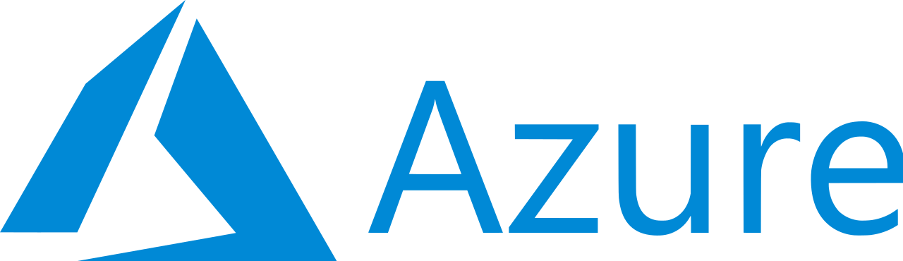

Für unsere Unternehmergruppe war bedeutend, dass Sie immer an den Nutzen für uns gedacht haben und nicht an komplizierte Perfektionierung. Die fünf lauffähigen Prototypen fanden wir sehr beeindruckend. Das war offensichtlich nichts von der Stange, sondern Ihr individueller Vorschlag für die pragmatische Lösung unserer Fragestellung.
KI-Beratung für den Mittelstand
Planbarer KI-Erfolg beginnt vor der Technik.
Wir klären zuerst, wo KI echten Nutzen schafft. Dann befähigen wir Ihr Team und setzen die passende Lösung um. So entstehen Anwendungen, die im Alltag funktionieren und sich rechnen.
30 Minuten, kostenfrei und ohne Verkaufsgespräch. Sie gehen mit einer Einschätzung raus, auch wenn wir nicht zusammenarbeiten.
Erkennen Sie Ihr Unternehmen wieder?
Genau dort setzen wir an.
Was Kunden sagen
Vielen Dank nochmals für die interessante, aufschlussreiche und sehr gut moderierte Schulung, die im Haus sehr gutes Feedback hervorgerufen hat.
Mit dem Forecasting-Tool brauchen wir deutlich weniger Zeit für die Bestellplanung. Alle relevanten Zahlen sind an einem Ort, und wir sehen auf einen Blick, was bestellt werden muss.
Drei Stufen. In dieser Reihenfolge.
Sie müssen nicht alle drei gehen. Aber Sie sollten keine überspringen. Wer direkt automatisiert, ohne zu wissen wofür und mit wem, baut teure Insellösungen, die nach einem halben Jahr niemand mehr benutzt.
Strategie
Wissen, wo KI sich rechnet
Wir prüfen Ihre Prozesse und Daten und sortieren die Anwendungsfälle nach Aufwand und Ertrag. Sie bekommen einen priorisierten Fahrplan mit Wirtschaftlichkeitsrechnung, kein Ideenpapier.
Ergebnis: Eine Entscheidungsgrundlage, mit der Sie in die Geschäftsführung gehen können.
Befähigung
Ein Team, das KI wirklich nutzt
Keynotes für den Einstieg, Praxis-Workshops für die Tiefe. Ihre Führungskräfte und Teams lernen an ihren eigenen Aufgaben, nicht an Beispielen aus dem Lehrbuch. Inklusive Rechtslage und dem, was im Unternehmen nichts zu suchen hat.
Ergebnis: Mitarbeiter, die Potenziale selbst erkennen, statt auf Anweisung zu warten.
Automatisierung
Systeme, die den Alltag tragen
KI-Agenten, Chatbots und Auswertungen, die in Ihre bestehende Systemlandschaft eingebettet werden. Entwickelt in kurzen Zyklen, übergeben mit Schulung, damit die Lösung Ihnen gehört und nicht Ihrem Dienstleister.
Ergebnis: Ein laufendes System und die Zeit Ihres Teams zurück.


Projekt-Referenz
Von ERP-Daten zum Forecasting-Tool in unter 3 Wochen
Wie ein Distributor für Sicherheitstechnik mit über 1.400 Produkten seine Beschaffungsplanung von Bauchgefühl auf datengetriebene Entscheidungen umgestellt hat.
Ausgangslage
Manuelle Beschaffungsplanung bei 4 Monaten Lieferzeit aus Asien
Der Großhändler für Videoüberwachung und Alarmanlagen importiert über 1.400 Produkte aus Asien. Bei 4 Monaten Seefracht-Vorlaufzeit führte die Planung per Bauchgefühl immer wieder zu Engpässen und zu teuren Luftfracht-Notbestellungen.
Lösung
Forecasting-Tool auf Basis vorhandener ERP-Daten
Aus den bestehenden ERP-Daten haben wir ein Forecasting-Tool entwickelt, das Bedarfe prognostiziert, Bestellzeitpunkte vorschlägt und kritische Artikel frühzeitig markiert, vollständig automatisiert.
318
Lieferengpässe frühzeitig erkannt
€2,09M
Bestellvolumen optimiert
93%
weniger Zeitaufwand für Beschaffungsplanung
„Wir sehen jetzt zum ersten Mal schwarz auf weiß, welche Artikel wirklich kritisch sind. Vorher haben wir das nach Gefühl gemacht."
So läuft ein Projekt konkret ab
Unabhängig davon, auf welcher der drei Stufen wir einsteigen: Der Ablauf ist immer derselbe und Sie wissen nach jeder Phase, woran Sie sind.
1. Analyse & Potenzial
- Kick-off & Kennenlernen: Wir verstehen Ihre Ziele und Herausforderungen.
- Use-Case-Identifikation: Gemeinsam finden wir die Anwendungsfälle mit dem größten ROI.
- Ergebnis & Ausblick: Sie erhalten einen priorisierten Maßnahmenkatalog als Entscheidungsgrundlage.
2. Konzeption & Planung
- Tiefenanalyse & Daten-Check: Wir prüfen Prozesse und die Qualität Ihrer Daten.
- Lösungsdesign & Business Case: Wir entwerfen die Architektur und erstellen eine Wirtschaftlichkeitsrechnung.
- Ergebnis & Fahrplan: Sie erhalten eine detaillierte KI-Roadmap mit Zeitplan und Meilensteinen.
3. Umsetzung & Befähigung
- Agile Entwicklung & Prototyping: Wir entwickeln einen ersten Prototypen (MVP) in kurzen Zyklen.
- Integration & Testing: Die Lösung wird nahtlos in Ihre bestehende Systemlandschaft integriert.
- Ergebnis & Übergabe: Wir schulen Ihr Team und übergeben ein System, das von Ihren Mitarbeitern getragen wird.
Ein Anruf. Eine KI. Ein gebuchter Termin.
Drei Minuten Mitschnitt: Die KI nimmt den Anruf entgegen, gleicht Termine ab und bucht. Urteilen Sie selbst, ob Sie am Telefon merken würden, dass kein Mensch dransitzt.

Transformation verstehen. Verantwortung übernehmen.
Als Unternehmensberater habe ich Transformationen begleitet, als KI-Verantwortlicher im Versicherungskonzern praktische Lösungen umgesetzt. Heute verbinde ich beides mit der Erfahrung, selbst ein Unternehmen aufzubauen.
In der Transformationsberatung habe ich gelernt, Geschäftsmodelle, Prozesse und Menschen zusammenzudenken. Im Versicherungskonzern kam die technische Praxis dazu: interne Chatbots, RAG-gestützte Assistenten und Workshops bis in den Vorstand. Datenschutz und Compliance waren dabei feste Anforderungen an jede Lösung.
Die Selbstständigkeit hat meinen Blick noch einmal geschärft: Welche Investition lohnt sich? Was muss zuerst gelöst werden? Und was funktioniert auch mit begrenztem Budget im Alltag? Diese Fragen bestimmen heute, wie ich berate und umsetze.
Neuratex AI habe ich gegründet, um mittelständische Unternehmen genau dabei zu unterstützen: Potenziale ehrlich bewerten, Prioritäten setzen und KI-Lösungen umsetzen, die im Betrieb einen konkreten Nutzen bringen.
Philipp Koch, Gründer
Diese KI-Anwendungen steigern schon heute die Effizienz von Unternehmen
Moderne KI-Lösungen sind längst praxiserprobt und lassen sich nahtlos in bestehende Abläufe integrieren. Richtig eingesetzt, sorgen sie für messbare Zeitersparnis, höhere Qualität und mehr Handlungsspielraum im Tagesgeschäft.
1. KI Agenten zur Prozessautomatisierung
KI automatisiert wiederkehrende und zeitintensive Aufgaben wie den Abgleich von Kundendaten oder die Erstellung von Angeboten. Der Einstieg gelingt am besten mit kleinen, klar definierten Prozessen, die sich Schritt für Schritt erweitern lassen. So entsteht eine skalierbare Lösung, die sich an Ihre Arbeitsweise anpasst.
2. Chatbots für Wissensmanagement und Support
Chatbots beantworten interne Fragen zu Prozessen, Richtlinien oder Produkten genauso wie Kundenanfragen. Sie arbeiten konsistent, mit aktuellem Wissen und sind jederzeit verfügbar. Eingebettet in Tools wie Microsoft Teams, Slack oder direkt auf Ihrer Website liefern sie schnelle Antworten ohne lange Wartezeiten.
3. Voicebots für Terminplanung und FAQs
Voicebots nehmen Termine direkt im Kalender auf, beantworten häufig gestellte Fragen und entlasten das Team auch außerhalb der Geschäftszeiten. Sie eignen sich besonders für Unternehmen mit hohem Telefonaufkommen wie Arztpraxen, Werkstätten oder Beratungsfirmen.
4. Dokumenten und Vertragsanalyse
Die KI liest Verträge, Angebote oder Handbücher, erkennt wichtige Passagen und erstellt prägnante Zusammenfassungen. So sinkt der manuelle Prüfaufwand von Stunden auf Minuten und das Risiko, entscheidende Details zu übersehen, wird deutlich reduziert.
5. Automatisierte Reports, Protokolle und Prognosen
Die KI erstellt aus vorhandenen Daten Projektberichte, Meetingprotokolle oder wöchentliche Auswertungen. Mit einer soliden Datenbasis lassen sich zusätzlich Bedarfsprognosen, Trendanalysen und fundierte Handlungsempfehlungen ableiten. So sparen Sie Zeit, erhalten einheitliche Formate und können Informationen sofort nutzen.
6. Datenanalyse mit konkreten Handlungsempfehlungen
Die KI wertet Verkaufszahlen, Kundenfeedback oder Produktionsdaten aus, erkennt Muster und liefert klare Vorschläge für Verbesserungen. Entscheidungen basieren so auf nachvollziehbaren Fakten statt auf Bauchgefühl.
Starten Sie mit dem ersten, richtigen Schritt.
In einer kostenlosen und unverbindlichen Potenzial-Analyse identifizieren wir gemeinsam den größten Hebel für den KI-Einsatz in Ihrem Unternehmen. Buchen Sie Ihren Termin direkt online.
Termin für Potenzial-Analyse buchen